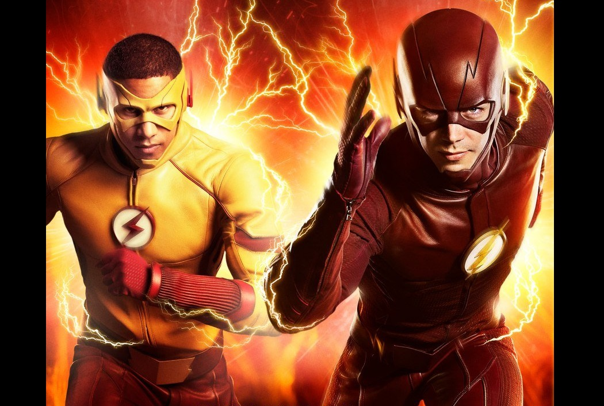
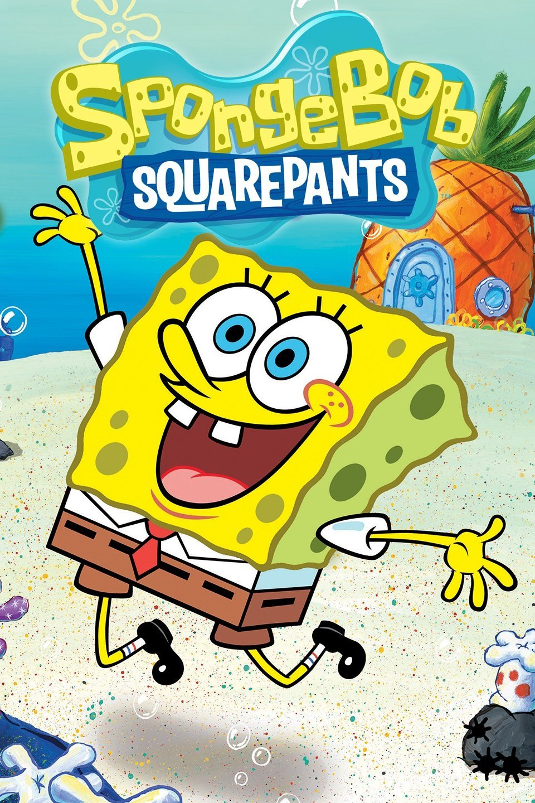

My Favorite TV Shows
The Flash

The Flash by far has to be one of my favorite TV shows. Not only is it filled with tons of action, which I like, it can be really funny too and the plot is very diverse. They're currently in the process of filming Season 4 which I am highly anticipating for.
Spongebob Squarepants

Even though this show is intended for young kids, I still watch it frequently. It can be really funny at times and is also a really good way to relieve stress and blow off some steam. Overall, I think the show should be recommended for viewers of all different ages.